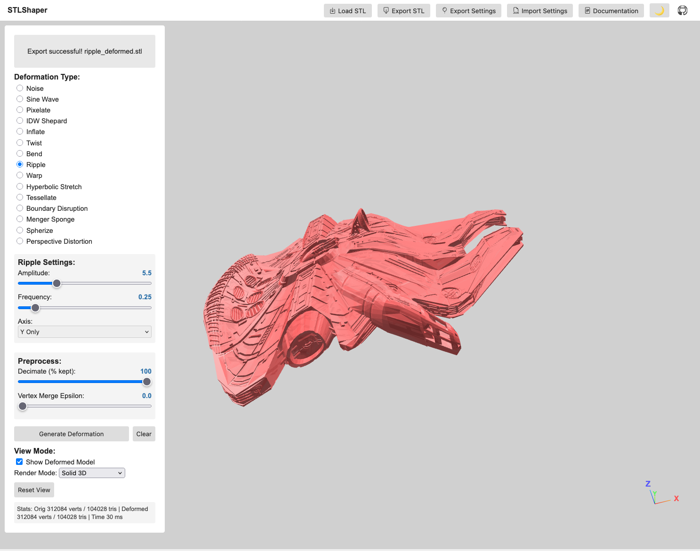
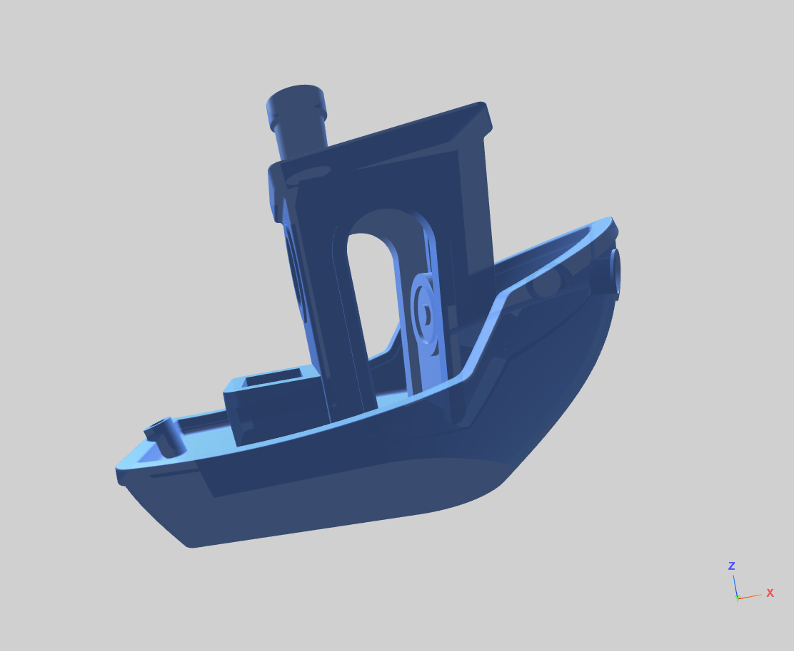
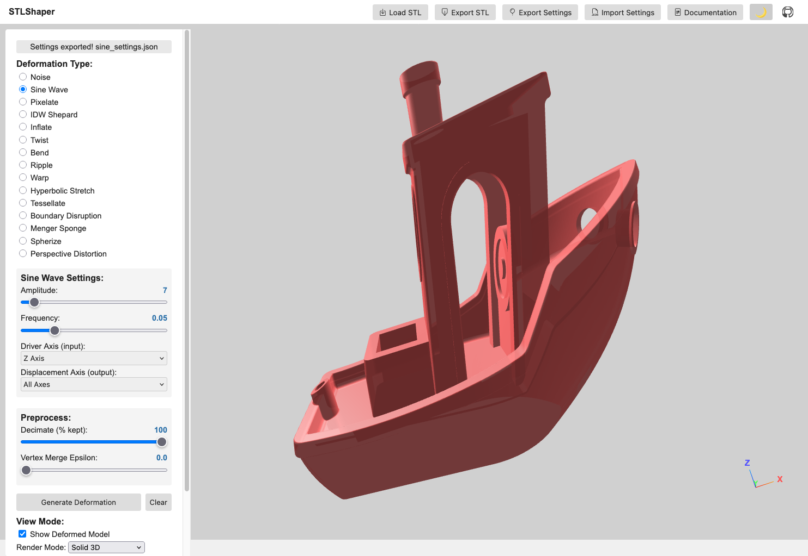
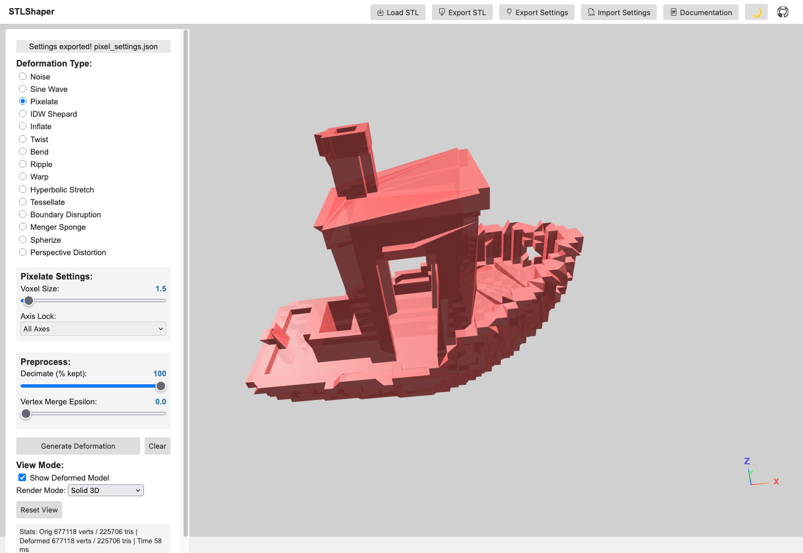
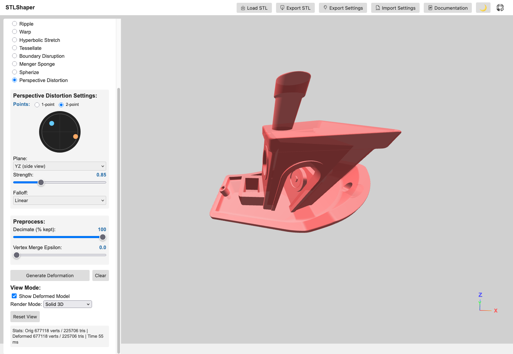
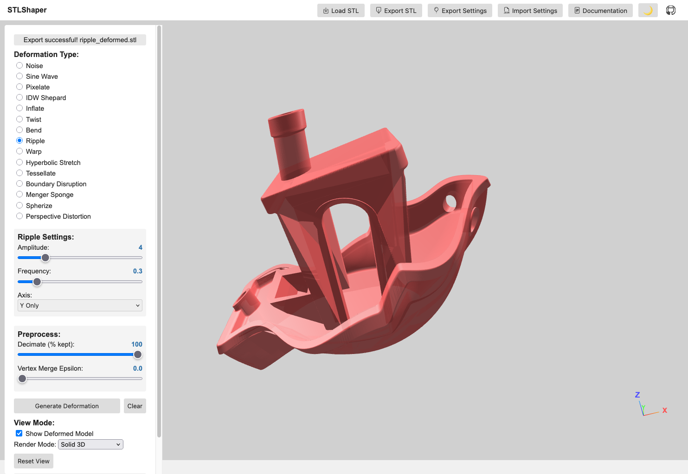
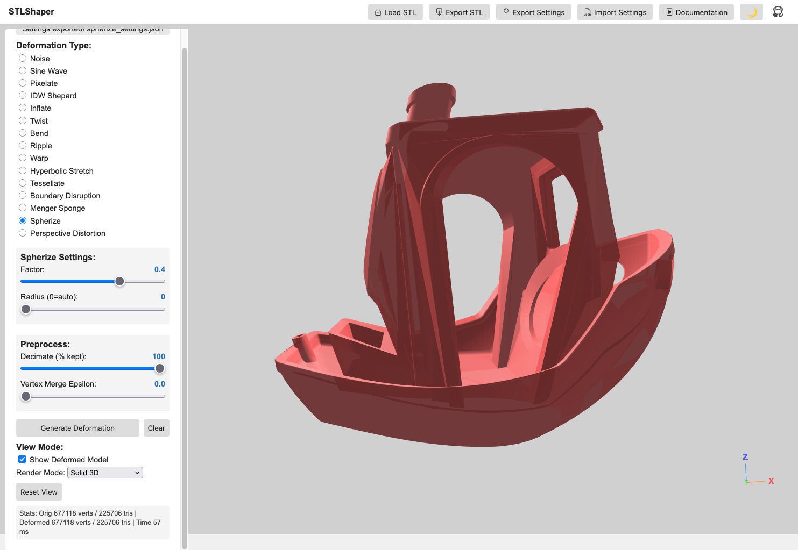

STLShaper¶
Version: 0.9.1

Note
This project is under constant development.
STLShaper loads STL files and applies mathematical deformations in real time: noise, sine waves, pixelation, inverse distance weighting, and topology-altering methods like tessellation and Menger sponges. You adjust parameters and export the result. The point is to make your models deliberately weird: unsettling, beautiful, broken.
Tip
Use deformation to explore how a single object changes under different mathematical rules. What does your model look like if you apply noise? Sine waves? A Menger sponge carved through it? Save the weird ones.
Motivation & Creative Exploration¶
- Subversion of Form: This project isn't about perfect realism. It's about deliberately distorting the familiar, creating unsettling or intriguing shapes.
- Algorithmic Abstraction: Noise, sine waves, and inverse distance weighting deform geometry in predictable and chaotic ways. Noise breaks regularity. Sine waves ripple across surfaces. IDW bends space around control points.
- Visual Metaphors: Consider how different deformations might represent abstract concepts such as chaos, tension, growth, and decay.
Features¶
- STL Loading: Loads STL files using the Three.js STLLoader. Start with simple objects (boxes, spheres, basic shapes) to get the basics working.
- Deformation Effects:
- Noise: Applies a noise-based deformation, introducing chaotic movement and distortion. Choose white noise for harsh granular static, or Perlin for a coherent field that swells in organic lumps. A seed control varies the pattern without touching the other settings.
- Sine Wave: Displaces vertices along a sine curve, creating rhythmic ripples across the model.
- Pixelate: Pixelates the model by snapping vertices to a grid, offering a stark, fragmented aesthetic.
- IDW Shepard: Multiple control points scattered through the model's interior. Each vertex moves based on distance to those points, and closer points pull harder.
- Inflate / Twist / Bend / Ripple / Warp / Hyperbolic Stretch: Surface operators. Inflate swells outward by distance from centre, Twist rotates along a chosen axis, Bend arcs the mesh over a controllable range, Ripple adds wave-like undulation, Warp introduces spatial noise-based offsets, and Hyperbolic Stretch stretches the form along an axis.
- Perspective Distortion: Projects geometry through a configurable vanishing point. An interactive canvas widget lets you drag a dot to set the distortion direction; the centre means no effect. Supports 1-point and 2-point modes (second orange dot adds an independent vanishing point), a plane selector (XY / XZ / YZ) to map widget axes to model space, linear and exponential falloff modes, and touch input on mobile.
- Tessellate / Boundary Disruption / Menger Sponge: Topology-oriented transformations. Tessellate subdivides triangles to add geometric density, Boundary Disruption jitters near edges for torn or frayed contours, and Menger Sponge carves repeating voids for porous, lattice-like structures.
- Deformation Chaining: A three-slot bar along the bottom composes up to three deformations in order, each stage working on the previous stage's output rather than restarting from the original mesh. Chaining is optional. With every slot empty, Generate Deformation behaves exactly as before.
- Real-time Deformation: Updates the deformation as you change parameters.
- Parameter Controls: Sliders and checkboxes for adjusting deformation parameters.
- Adaptive Parameter Ranges: Parameters scale with model size, so an effect looks the same across different STL scales.
- Visual Feedback: Displays the deformed model in 3D space, with wireframe spheres marking IDW control points.
- Axis Gizmo: On-screen X/Y/Z labels for orientation.
- Multi-Axis Selection: Axis-based deformations (twist, bend, ripple, hyper) can target multiple axes.
- Parallel Processing: Uses Web Workers to spread large STL files across cores.
- Preprocess Options: Optional cleanup before deformation. Decimate keeps a percentage of triangles (faster but less detail), and Vertex Merge collapses near-identical vertices within an epsilon (reduces duplicates and can stabilize deformations). Most models do not need either, but they help with very dense STLs or when you want faster iteration.
- Import/Export Settings: Reuse deformation presets across STLs; exported settings include preprocess parameters.
- Stats HUD: Displays vertex/triangle counts and deformation time.
- Export: Exports the deformed model as an STL file.
Deformation Examples¶






IDW Shepard Deformation¶
Control points pull vertices based on distance, and closer points pull harder. The result bends smoothly, without the grid-like feel of axis-based or noise-driven methods.
Key Features¶
- Poisson Disk Sampling: Evenly distributed control points to prevent clustering
- Volume-Constrained Placement: Points are guaranteed inside the mesh volume
- Seed-Based Generation: Deterministic point placement for reproducible results
- Manual Control Points: Optional manual list of points (single or multi-point)
- Sampling Rays Control: Adjustable inside-mesh sampling for speed/robustness
- Adaptive Influence: Inverse distance weighting with customizable power falloff
- Visual Feedback: Wireframe spheres show control point positions and influence
- Scalable Effects: Parameter ranges scale to model size for consistent output
Technical Implementation¶
- Multi-Point IDW: Each vertex is influenced by all control points
- Parallel Processing: Web Workers handle heavy computation for large meshes
- Real-time Visualization: Control points scale with model size (5% of largest dimension)
- Robust Volume Detection: Ray casting confirms each point sits inside the mesh
Perspective Distortion¶
The vanishing-point projection is applied directly to mesh vertices. It moves the geometry itself rather than changing the camera.
Key Features¶
- Interactive canvas widget: Drag a dot inside a circle; dot position = stretch direction, centre = no effect
- 1-point mode: Single vanishing point for classic perspective exaggeration
- 2-point mode: Second orange dot adds an independent vanishing point for complex projections
- Plane selector: XY / XZ / YZ maps the 2D widget axes to the correct model-space plane
- Falloff modes: Linear (uniform gradient) or Exponential (strong near vanishing point, soft far away)
- Touch support: Works on mobile and tablet
Requirements¶
- Modern web browser with Web Worker support (Chrome 4+, Firefox 3.5+, Safari 4+, Edge)
- JavaScript ES6+ features supported by your browser
- Three.js r121 (bundled)
- FileSaver.js (included)
- Web Workers (required for parallel processing of large deformations)
Run Options¶
- Run locally: Clone the repository and open
index.htmlin a modern browser. - Run online: Open the hosted version at https://toledoem.github.io/stlshaper/.
Setup¶
- Place all files (
index.html,main.js, libraries) in a directory. - Open
index.htmlin your web browser.
Usage¶
- Load STL: Click the "File Input" button to select an STL file.
- Deformation Type: Choose the deformation type from the radio buttons (Noise, Sine Wave, Pixelate, IDW Shepard, etc.).
- Adjust Parameters: Use the sliders and inputs to control the deformation parameters. IDW parameters adapt automatically to model size.
- Generate Deformation: Click the "Generate Deformation" button.
- Visualize: The deformed model will be displayed in the 3D view.
- Export (Optional): Click the "Export Current STL" button to save the deformed model as an STL file.
Controls¶
- File Input: Select an STL file.
- Radio Buttons: Choose the deformation effect.
- Sliders: Adjust the parameters of the chosen effect.
Noise Controls¶
- Type: Which noise field drives the displacement.
- White Noise: every vertex gets an independent random offset. Harsh and granular; the surface reads as static.
- Perlin: a coherent field, so nearby vertices move together. The surface reads as lumps and swells rather than grain.
- Seed: Changes the random pattern without changing any other setting (0 - 10000). Useful for trying variations of the same look.
- Intensity: Controls the strength of the noise deformation (0.1 - 5.0)
- Scale: Controls the frequency/size of noise features (0.005 - 0.5). In Perlin mode this sets how large the lumps are, and lower values give broader, smoother swells.
- Axis: Choose which axes to apply noise to (All, X, Y, Z, or combinations)
Settings files saved before the Type control existed load as White Noise, so older recipes keep producing the result they always did.
Sine Wave Controls¶
- Amplitude: Controls the height of the sine waves (1 - 100)
- Frequency: Controls how many waves fit in the model (0.01 - 0.2)
- Driver Axis: Which axis provides the input to the sine function (X, Y, Z)
- Displacement Axis: Which axes the sine wave displaces (X, Y, Z, or combinations)
Pixelate Controls¶
- Voxel Size: Size of the pixelation grid (0.5 - 50)
- Axis Lock: Which axes to pixelate (All, X, Y, Z, or combinations)
IDW Shepard Controls¶
- Number of Points: How many control points to generate (3 - 50)
- Seed: Numeric seed for reproducible control point placement (0 - 10000)
- Weight: Strength of attraction/repulsion at control points (adaptive range by model size)
- Power: Influence falloff with distance (0.5 - 6.0)
- Global Scale: Overall deformation scaling (adaptive range by model size)
- Generate Deformation: Apply the deformation.
- Export Current STL: Export the deformed model.
Perspective Distortion Controls¶
- Canvas widget: Drag dot to set vanishing point direction and magnitude
- Mode: 1-point or 2-point
- Plane: XY / XZ / YZ
- Strength: Overall distortion magnitude
- Falloff: Linear or Exponential
Chain Bar¶
The bar along the bottom of the viewport composes up to three deformations, run in order when you click Calculate Output.
- Slot 1 / 2 / 3: Click a slot to point the parameter panel at it. A filled slot restores its own deformation and settings; the highlighted slot is the active one.
- Set Slot: Commit the currently selected deformation and its parameters into the active slot. This is the explicit save. Selecting a different slot only reads, it never writes.
- Clear Slot: Empty the active slot.
- Calculate Output: Run every filled slot in order. Preprocessing is applied once, before the first stage, so vertex loss does not compound across stages.
- Clear Chain: Empty all three slots and discard the chain result.
Order matters: noise-then-twist and twist-then-noise produce different meshes. Stages that depend on the mesh they are given are recomputed per stage. IDW places its control points inside the intermediate geometry, and Perspective recomputes its normalisation against it, which matters in exponential falloff mode where the value does not cancel out.
Exports name themselves after the whole recipe, so a noise-then-twist chain saves as noise_twist_deformed.stl. Settings exports carry the chain alongside the usual single-deformation fields; a chain recipe re-imports into its slots, while recipes written before chaining still load as a single deformation.
Triangle budget. Tessellate multiplies triangles fourfold per step, so three maxed-out Tessellate slots would multiply a mesh by 262,144. A chain projected to exceed 5,000,000 triangles is refused before anything runs, and the message names the slot responsible.
Code Structure¶
index.html: The main HTML file that sets up the Three.js scene, UI elements, and event listeners.main.js: Core logic for loading the STL, applying deformation, rendering, and UI. Includes Poisson disk sampling, volume detection, and adaptive parameter scaling.worker.js: Web Worker for parallel processing of vertex deformations (especially IDW).libraries/: FileSaver.js, used for the STL download. Three.js and its OrbitControls/STLLoader add-ons are loaded from the jsDelivr CDN inindex.html.
Important Notes¶
Performance Considerations
- The performance depends on the complexity of the STL model and chosen deformation algorithm
- The rendering process can be slow with complex models
- Web Workers improve responsiveness for large meshes and multi-point IDW
Post-processing Required
After deformation, you may need to repair the mesh in Meshlab. Use these filters:
- Filters -> Cleaning and Repairing
- Remove Zero Area Faces (twice)
- Repair Non-manifold Edges (split)
Notes¶
- IDW Shepard deformation works best with solid, manifold meshes. Complex or thin-walled models may produce unexpected results.
- Some STLs may require normal regeneration to avoid black/incorrect shading (handled in recent builds).
Changelog¶
0.9.1 (2026-11-01)¶
- Upgraded Vitest and
@vitest/coverage-v8from 2.1.9 to 5.0.5, clearing 17 Dependabot alerts; development dependencies only - CI workflow now runs with read-only
contentspermission - The test helper that loads
index.htmlstrips<script>tags by parsing the page instead of using a regex - New coverage baseline for Vitest 5; the suite now has 561 tests
0.9.0 (2026-09-05)¶
- Added deformation chaining: a three-slot bar composes up to three deformations in order, each stage fed the previous stage's output
- Added chain recipes to settings files; recipes written before chaining still load as a single deformation
- Added a triangle-count projection that refuses a chain projected to exceed 5,000,000 triangles, naming the slot responsible
- Added a Perlin noise type alongside the original white noise, plus a seed control
- IDW settings exports now record the control points actually used, so a recipe reproduces on re-import
- Added a test suite of 559 tests covering 98% of
main.jsand 100% ofworker.js, with coverage floors enforced in CI - Split
generateCurrentintorunDeformation(geometry, key, params), which takes the geometry to operate on and returns the result - Fixed Perspective Distortion discontinuities at chunk boundaries in exponential mode; the normalization basis is computed over the whole mesh
- Fixed a failing worker leaving the app stuck on "Processing" forever
- Fixed vertex merge with epsilon 0 collapsing the mesh to a single point
- Fixed binary STL loading producing two normals per vertex, leaving the mesh mis-shaded
- Fixed deformed geometries never being released, leaking GPU memory on each run
0.8.0 (2026-05-01)¶
- Exposed global scene, camera, and renderer for browser console access
- Improved UI/GUI with enhanced styling and layout refinements
- Canvas widget layout and interaction improvements
- Documentation rendering and organization
0.7.0 (2026-04-21)¶
- Added Perspective Distortion deformation with interactive vanishing-point picker widget
- Circle canvas widget with draggable dot to set distortion direction; centre = no effect
- 1-point and 2-point mode: second orange dot adds independent vanishing point
- Plane selector (XY / XZ / YZ) maps widget axes to model space
- Linear and exponential falloff modes
- Touch support for the canvas widget
0.6.0 (2026-02-10)¶
- Added importable deformation settings to reuse presets across STLs
- Added on-screen axis gizmo with X/Y/Z labels
- Added multi-axis selection for axis-based deformations (twist, bend, ripple, hyper)
- Improved Menger sponge, tessellation range, settings export, and UI/camera performance
- Fixed shading issues by ensuring valid vertex normals, plus assorted robustness fixes
0.5.0 (2026-02-08)¶
- Updated GUI and camera behaviour
- Fixed P0, P1, P3, and P4 issue sets
0.4.0 (2025-10-28)¶
- Added settings workflow groundwork and Web Worker processing
- General refinements and cleanup
0.3.0 (2025-10-27)¶
- Initial autoloader workflow
0.2.0 (2025-10-06)¶
- Bug fixes and iterative improvements
0.1.0 (2025-10-04)¶
- Initial project scaffold and documentation
Contributing¶
Bug reports, feature requests, and pull requests are welcome.
License & Attributions¶
STLShaper is released under the MIT License.
Third-Party Libraries & Resources¶
-
Three.js (v0.121.1), MIT License
- 3D graphics library for WebGL rendering
-
Bootstrap Icons, MIT License
- Icon library for UI elements (box-arrow-down, box-arrow-in-down, filetype-json, balloon icons)
-
FileSaver.js, MIT License
- Client-side file download functionality for STL exports
Sample STL Models¶
Sample 3D models used for testing and demonstration are sourced from:
- NIH 3D Print Exchange, Public Domain
- Freely available biomedical 3D models for non-commercial use and research
Attribution¶
Built by Enrique Toledo (@ToledoEM)
Disclaimer: This tool is provided as-is for experimental and educational purposes.